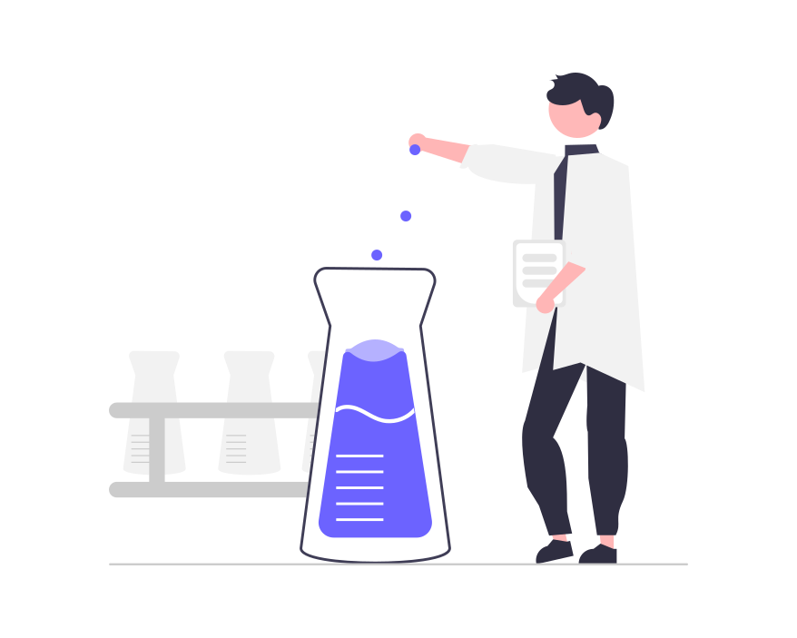
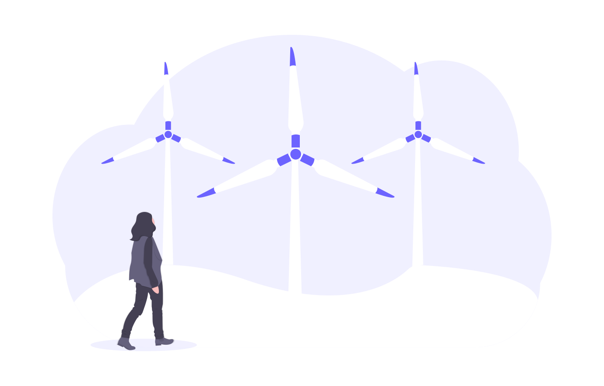

Welcome
ごあいさつ
研究概要
我々は地球上に住み、様々なエネルギーを利用して日々の活動を行っていますが、 この地球という系に与えられるほぼ唯一のエネルギー源は太陽光です。 したがって、太陽光のエネルギーを「如何にして蓄え、そして利用するのか」と いうことが、持続可能社会を実現するために重要なポイントになります。


私はこれまで、マグネシウムなどの多価イオンを利用した次世代蓄電池に関する基礎研究 を行ってきました。蓄電池とは人工的なエネルギー変換システムであり、電気エネルギー と化学的なエネルギーを相互に変換することができます。一方で、自然界には太陽光の エネルギーを化学的なエネルギーに変換する光合成というシステムがあります。
これからは、蓄電池と光合成は同類のシステムとして理解できるという着眼点から、①両者を組み合わせた 革新的エネルギー変換/貯蔵デバイス開発および②バイオ-理工融合のエネルギー変換のための 基礎学理構築を両輪とした研究を推進します。
